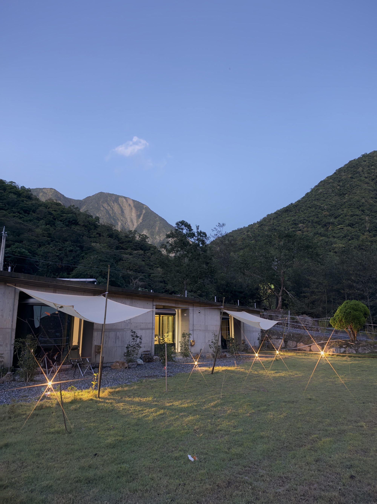
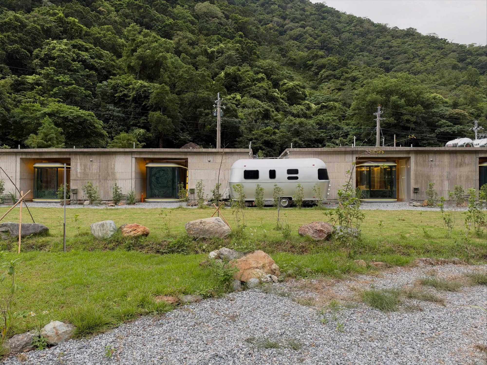
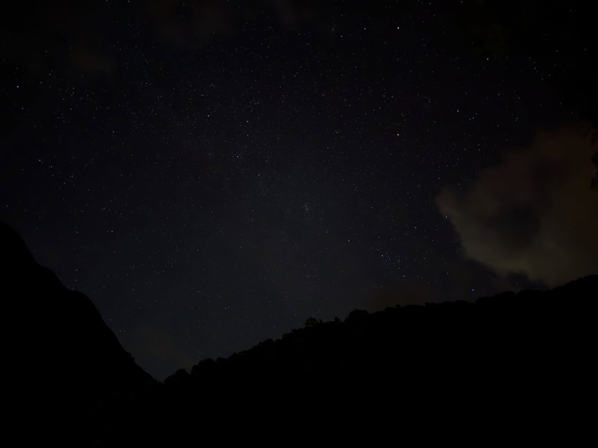

碧候在哪裡
碧候是宜蘭南澳鄉的泰雅族部落，位在台 9 線南澳市區往山裡的方向。
沿著金岳路走，兩旁是山，旁邊是溪，碧候溫泉就在這條路上。
游山谷露位於金岳路 190 號，就在碧候溫泉旁的碧候山谷裡，車程 5 分鐘內。

住在碧候山谷，慢慢認識南澳
碧候是宜蘭南澳鄉的泰雅族部落，位在台 9 線南澳市區往山裡的方向。
沿著金岳路走，兩旁是山，旁邊是溪，碧候溫泉就在這條路上。
游山谷露位於金岳路 190 號，就在碧候溫泉旁的碧候山谷裡，車程 5 分鐘內。

碧候溫泉（也常被寫作「碧侯溫泉」）是全台三大秘湯示範區之一，泉質為碳酸氫鈉泉，透明無色無味。

同在金岳村的金岳瀑布，是鹿皮溪上游的溪谷景點，夏天常有人來玩水消暑。
溪水深淺與天候變化大，前往前請評估天氣、水況與自身狀況，注意安全。

南澳鄉是以泰雅族為主的原鄉，碧候、金岳都是部落的所在地。
這裡沒有熱鬧的商圈，有的是溪水聲、山羌與台灣藍鵲。白天走走溪谷，晚上回到山谷裡，就是最南澳的慢旅行。

從北部開車往南澳，會先經過東澳。
路上可以順遊東澳的粉鳥林漁港、東岳湧泉，再一路往南抵達碧候山谷。
逛完碧候周邊，回到游山谷露的森林露營車。
每間都有獨立客廳、衛浴與房內私湯，泡完湯就能聽著溪水聲入睡。
一泊三食從午後的下午茶、晚間的職人地誌鍋物，到隔天一早的早餐，都替你準備好了。
交通：開車經國道 5 號、蘇花改至南澳，轉金岳路即可抵達；搭火車可至南澳車站。
地址：宜蘭縣南澳鄉金岳村金岳路190號